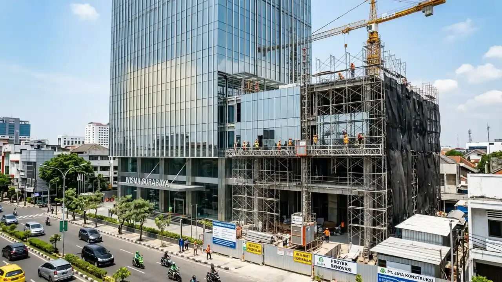

Kriteria Utama dalam Memilih Kontraktor Ruko Surabaya yang Profesional
Kriteria utama mencakup legalitas badan usaha resmi, portofolio proyek komersial aktif, kepatuhan jadwal waktu kurva S, serta transparansi rincian RAB.
Merenovasi bangunan komersial memiliki tingkat kesulitan berbeda dibandingkan rumah tinggal biasa. Berdasarkan survei Kamar Dagang dan Industri (Kadin) Jawa Timur 2025/2026, lebih dari 40% keterlambatan operasional gerai ritel di Surabaya disebabkan oleh kontraktor yang tidak memiliki kapabilitas logistik material yang memadai di area pusat kota yang padat.
Pastikan kontraktor yang Anda tunjuk memenuhi standar berikut:
- Legalitas Perusahaan Jelas (PT/CV): Memiliki Nomor Induk Berusaha (NIB) dan sertifikasi badan usaha jasa konstruksi yang sah.
- Kesiapan Manajemen K3 Proyek: Memasang jaring pengaman (safety net), pagar penutup seng rapi di area trotoar, dan rambu keselamatan kerja agar tidak mengganggu pejalan kaki serta pengguna jalan.
- Fleksibilitas Waktu Kerja: Menyediakan tim kerja malam untuk pekerjaan dengan tingkat kebisingan tinggi (seperti bobok beton atau pengelasan struktur baja).
Bagaimana Tahapan Renovasi Ruko Komersial Agar Efisien dan Bebas Kendala?
Tahapan mencakup audit kelayakan struktur eksisting, pembuatan desain 3D fasad & interior, penyusunan jadwal kerja ketat, hingga eksekusi bertahap.
Berikut panduan sistematis alur renovasi ruko komersial:
1. Audit Struktur dan Utilitas Eksisting
Sebelum membongkar dinding, teknisi sipil memeriksa posisi kolom utama, balok anak, dan instalasi pipa air/kabel listrik lama untuk menghindari pemotongan jalur instalasi vital.
2. Desain Fasad dan Optimalisasi Tata Ruang (Layout 3D)
Penyusunan gambar 3D yang mengedepankan identitas merk usaha (brand identity), pencahayaan komersial (commercial lighting), serta zona sirkulasi pengunjung yang lapang.
3. Eksekusi Pembongkaran dan Penguatan Baja WF
Jika diperlukan area lantai dasar yang luas tanpa sekat tiang, balok beton lama diperkuat dengan penambahan balok baja IWF/H-Beam sistem tumpuan jepit.
4. Pekerjaan Finishing & Mekanikal Elektrikal (MEP)
Pemasangan lantai granit heavy-traffic, instalasi jalur AC sentral / ducting, partisi gypsum peredam suara, panel ACP eksterior, serta instalasi proteksi kebakaran (APAR dan detektor asap).

Pekerjaan ereksi struktur baja dan renovasi lantai ruko komersial 2 lantai.
Tabel Komparasi Jenis Pekerjaan Renovasi Ruko di Surabaya
Tabel komparasi menyajikan estimasi biaya, durasi pengerjaan, dan cakupan teknis renovasi ruko berdasarkan skala kebutuhan.
| Skala Renovasi | Renovasi Fasad & Eksterior | Renovasi Interior & Layout | Renovasi Total & Tambah Lantai |
|---|---|---|---|
| Estimasi Biaya | Rp35.000.000 – Rp90.000.000 | Rp1.500.000 – Rp2.800.000 / m² | Rp3.500.000 – Rp5.000.000 / m² |
| Durasi Pengerjaan | 2 – 4 Minggu | 4 – 8 Minggu | 3 – 5 Bulan |
| Cakupan Pekerjaan | Pasang Panel ACP, Kaca, Cat Baru | Sekat Gypsum, Lantai, Plafon, MEP | Suntik Pondasi, Dak Baja, Re-layout |
| Izin yang Diperlukan | Koordinasi Pengelola Kawasan | Izin Internal Gedung | Izin PBG Perubahan Bangunan |
| Dampak Operasional | Rendah (Toko Tetap Buka) | Sedang (Bisa Shift Malam) | Tinggi (Gedung Dikosongkan) |
| Garansi Pengerjaan | 6 Bulan (Sealant Anti-Bocor) | 6 Bulan | 12 Bulan (Garansi Struktur) |
- Gunakan Metode Overlay Lantai: Pasang lantai vinyl SPC click atau keramik baru di atas lantai lama menggunakan mortar perekat tile on tile khusus untuk menghemat biaya bobok lantai hingga 30%.
- Pilih Ketebalan ACP Sesuai Posisi: Gunakan panel ACP PVDF 0.3mm/0.5mm untuk fasad luar yang terkena cuaca langsung, dan panel ACP PE 0.2mm untuk aksen dinding interior guna efisiensi anggaran material.
- Rencanakan Titik Lampu LED Terpadu: Penggunaan lampu downlight LED spotlight hemat energi yang terbagi dalam beberapa grup saklar membantu menghemat tagihan listrik operasional toko hingga 25%.
Pertanyaan yang Sering Diajukan (FAQ)
Kesimpulan Praktis
Renovasi ruko yang sukses adalah perpaduan antara kecepatan eksekusi, estetika komersial yang memikat, dan kepatuhan terhadap regulasi tata kota. Tingkatkan daya saing bisnis Anda bersama kontraktor terpercaya.